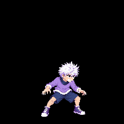
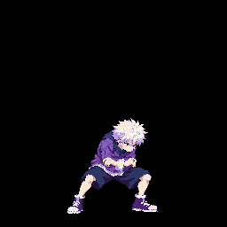
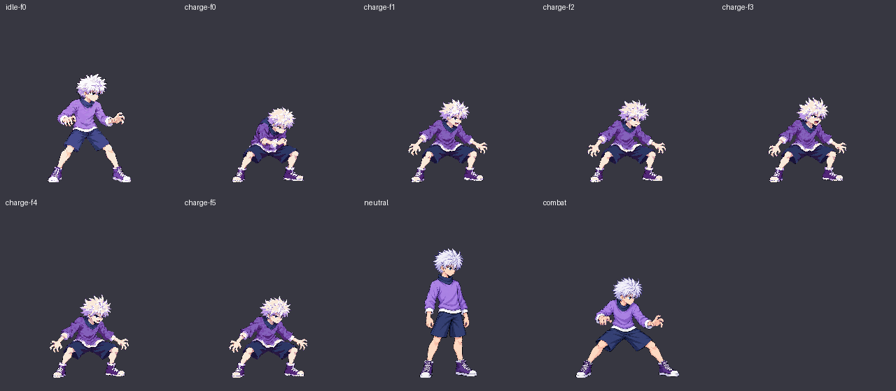
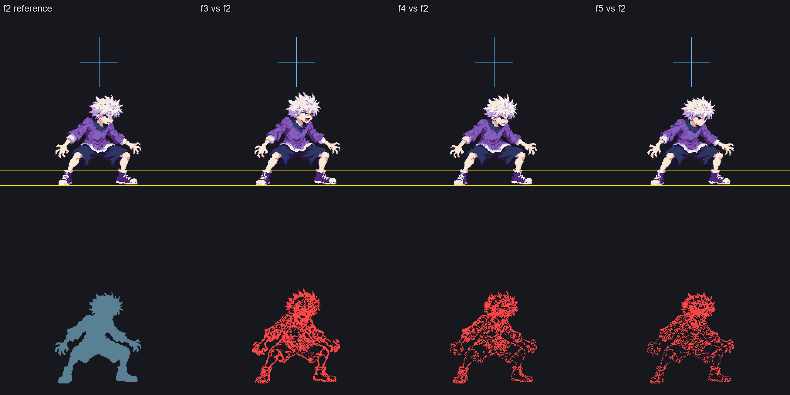
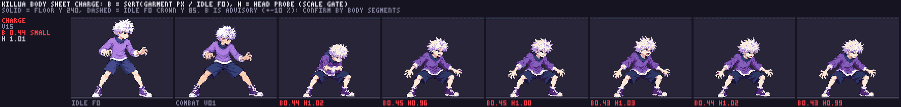
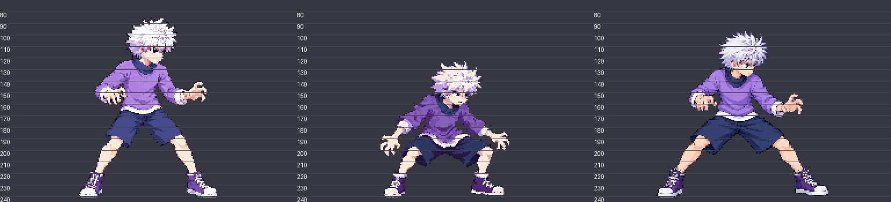
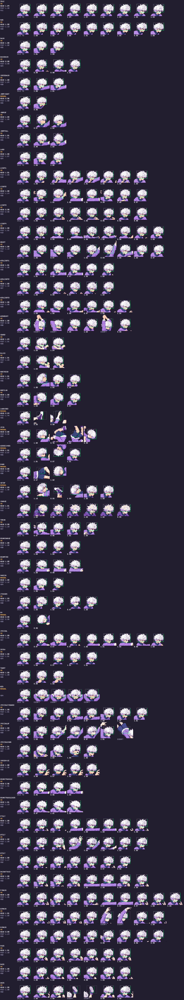

Six packed 256×256 cells. Gather and release play once; the hold loops from f2 at 110 ms per frame. The candidate uses two image-generation calls; the filed v15 is preserved byte-for-byte.
Astra post-merge atlas identity recheck. The exact packed v15 cells were pixel-identical after merging main. Use the separate gameplay preview link accompanying this review to check the animation at game timing.

Current approved pack, extracted from main before this candidate pack.

f0 70 ms, f1 90 ms, f2–f5 110 ms each. Plays the four-frame hold loop four times, then stops.
Cells are from the final quantized atlas. First cell is approved idle f0; the six charge frames follow left to right.

Packed cells overlaid and differenced at 2×. Gold lines mark y=220 and y=240; blue guides mark the head inspection region. Exact feet/head findings and uncertainty are in the Astra audit.



Automatic head probe for the packed Killua animations; charge reads 1.011 median and all six frames pass. The review is bound to this v15 atlas.

art/characters/killua/raw/charge_v15.png; SHA-256 eee81e7655d1d63a3223f45cc1e79c2c335983b05db77d01a71aeef6f018b108.loopFrom: 2.scaleManualQA was used.Review this as a sprite design. Technical evidence does not imply approval; the game floor/contact check remains Claude's integration step. In the preview, hold Special to see the gather and held loop at game timing.